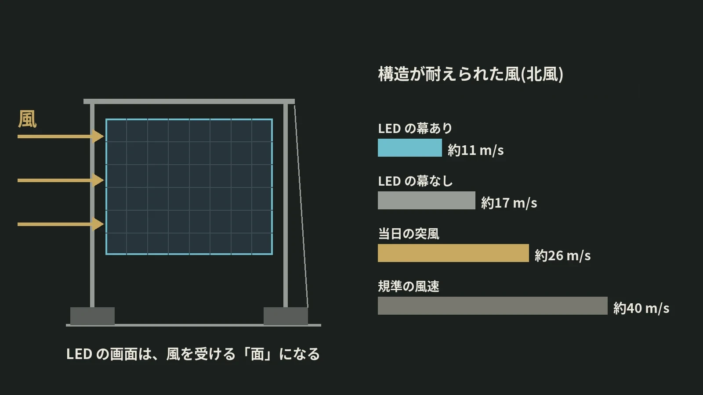

LOTUS VISUAL JOURNAL / 現場の裏側 #wind
LED の画面は、
風を受ける帆になる。
野外ステージが倒れた夜の数字
野外のステージに LED の画面を立てると、画面は映像を映す面であると同時に、風を受け止める大きな面にもなります。
2011 年に米国で起きたステージの倒壊について、公的な調査報告書は、そのことを数字で示していました。
01 / THE NIGHT2011 年 8 月 13 日の夜
米国インディアナ州の州フェアで、野外のステージの屋根と、照明や画面を支える仮設の構造が、嵐の風で倒れました。報告書によると、倒れたのは夜 8 時 46 分ごろです。7 名が亡くなり、多くの方が重いけがをしました。
天気が急に変わったわけではありません。州の委託で運営面を調べた報告書は、その 7 分前の 8 時 39 分に、国の気象機関が激しい雷雨の警報を出していたことを記録しています。
02 / THE SCREENLED の幕があるだけで
構造の原因を調べた報告書は、この構造がどれだけの風に耐えられたかを、風の向きごとに計算しています。LED の幕(スクリム)と画面が付いた状態では、北風で毎秒約 11 m(25 mph)、北西で約 13 m(28 mph)、西風で約 19 m(43 mph)。LED の幕と画面がない状態なら、北風で約 17 m(38 mph)、北西で約 18 m(40 mph)、西風で約 24 m(53 mph)でした。
北風で比べると、耐えられる風は LED の幕があるだけで約 17 m から約 11 m へ、3 分の 2 ほどに下がっています。画面は軽い幕であっても、風を受ける面積を大きくします。報告書は、製造元の構造計算が LED の幕や画面にかかる風を検討していなかったことも指摘しています。
当日、現地で記録された突風は毎秒約 26 m(59 mph)。規準が求める風速は毎秒約 40 m(90 mph)、仮設の構造として低減した値でも約 30 m(68 mph)とされています。実際の構造は、そのどちらにも届いていませんでした。
03 / BALLAST最初に動いたのは、重しだった
報告書が最初に挙げた原因は、構造を横から支える仕組みの力不足です。張り綱は、道路の中央分離帯などに使うコンクリートの重し(ジャージーバリア)につながれていました。計算では、風が強まるにつれて重しが一つずつ滑り、毎秒約 15 m(33 mph)で最初の重しが、約 18 m(41 mph)で次の重しが、約 19 m(43 mph)で 3 つ目が滑って、構造全体が崩れる流れが示されています。
報告書はほかにも、計算書と違う施工(ワイヤロープの太さ、筋かい、補助の柱の位置)があったこと、当時の州の規準の解釈では、この種の仮設構造が設計の審査・許可・検査を受けずに済んでいたことを挙げています。
04 / DECISION決める人と、決める数字
運営面の報告書が挙げたのは、天気の情報そのものではなく、それを使って決める仕組みの欠けでした。会場の近くに風速計はなく、民間の気象会社とも契約していませんでした。開演を遅らせる・延期する・中止するのはどういうときか、という決まりがなく、だれが決めるのかも文書で決まっていませんでした。緊急時の計画はあったものの、当日は参照されていませんでした。
野外の現場では、風は当日にならないと分かりません。だからこそ、画面を含めた構造が耐えられる風、測る道具、止める基準、その判断をする人を、設営の前にそろえておく必要があります。
LOTUS VISUAL へのご相談では
野外で LED の画面を立てるご相談では、画面の大きさと建て方に加えて、会場の風の条件、画面を支える構造と重し、当日の風を測る方法、中止や画面を下げる判断をだれがどの数字で行うかを、最初の段階で一緒に確認させてください。
構造の計算や許可が必要な場合は、その担当の方と同じ資料を見ながら進めます。数字の裏付けがないまま「大丈夫です」とは言いません。
今日の持ち帰り
- 画面は、風を受ける面になる。報告書の計算では、LED の幕があるだけで、北風で耐えられる風が約 17 m/秒から約 11 m/秒に下がった。
- 倒れ始めは足もとから。最初に動いたのは、張り綱をつないだ重しだった。
- 止める数字と、止める人を先に。風速計、中止の基準、判断する人を、設営の前に決めておく。
出典:Thornton Tomasetti「Indiana State Fair Collapse Incident」報告発表資料(2012 年 4 月、インディアナ州と州フェア委員会の委託。Finding 1・3・4・10・12・14、崩壊の順序。2026 年 11 月 13 日閲覧)、Witt Associates「An Independent Assessment of the August 13, 2011 State Fair Collapse Incident」(2012 年 4 月、インディアナ州の委託。倒壊と警報の時刻、風速計・気象会社・判断の権限・延期中止の決まり・緊急計画の記述。2026 年 11 月 13 日閲覧)。風速は報告書の mph を 1 mph = 0.447 m/秒で換算し、丸めています。